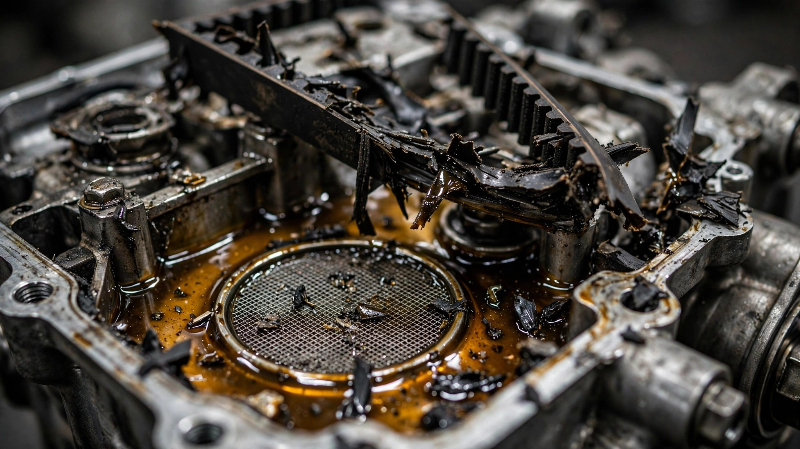

Ford's Six-Time Engine of the Year Is Eating Itself From the Inside

The Ford 1.0-liter EcoBoost three-cylinder won International Engine of the Year for six consecutive years. Judges praised its power-to-displacement ratio, its turbo response, its fuel economy. What nobody mentioned was the rubber timing belt submerged in engine oil, slowly shedding fragments into the lubrication system like a snake molting inside an aquarium pump. On August 3, NHTSA declared 135,551 vehicles equipped with this engine an "unreasonable risk to motor vehicle safety."[1]
The design is called belt-in-oil. Instead of running dry like a conventional timing belt or using a metal chain, Ford's 1.0L EcoBoost routes a rubber belt through the engine's oil bath. In theory, oil reduces friction and extends belt life. In practice, as the belt wears, microscopic rubber particles accumulate in the oil, migrating downstream until they pack the mesh pickup screen of the oil pump like wet sand in a coffee filter.[2] Once that screen clogs, oil pressure drops to nothing. Engine seizure. One Delaware driver reported the oil pressure warning light came on and within one-eighth of a mile the Focus "lost all power and the engine began to sound like a tank."[1]
NHTSA's Office of Defects Investigation has logged 355 complaints across 2014-2017 Fiestas, 2014-2018 Focuses, and 2018-2021 EcoSports. The average failure mileage lands at approximately 70,000 miles, which would be unremarkable except that Ford's own suggested timing belt replacement interval is 150,000 miles. So the belt is disintegrating at less than half its rated lifespan, and drivers who followed every maintenance schedule Ford printed are still watching their engines die on the highway with no advance warning.[1]
Ford's response, disclosed in June, is a "customer satisfaction program" that reduces the maintenance interval to 100,000 miles and offers reimbursement for some prior engine repairs.[1] Run that against the failure data and the arithmetic collapses: if 98% of failures happen by 70,000 miles, a 100,000-mile service interval catches roughly 2% of the problem. Ford built a net and hung it 30,000 miles past where the fish are jumping.
This is not the first time NHTSA has examined this engine. Ford recalled approximately 140,000 automatic-transmission versions in late 2023 for a related but mechanically distinct failure: in those cars, a balancer shaft unique to the automatic drivetrain created vibrations that degraded the oil pump drive belt's tensioner arm, which then shed belt teeth into the oil system.[3] Same engine, same belt-in-oil architecture, same oil pump clogging, different vibration signature. The manual-transmission versions now under investigation skip the balancer shaft entirely, yet the belt still degrades. The common denominator is not a bad bolt or a misaligned shaft. It is the decision to submerge rubber in oil and hope it holds.
All three affected nameplates are discontinued. Ford killed the Fiesta (U.S. sales ended 2019), the Focus (2018), and the EcoSport (2022). The company has moved on to Broncos and Lightnings. But 135,551 vehicles with this engine are still registered, still driven, still accumulating rubber debris in their oil pumps one commute at a time. NHTSA's upgrade to engineering analysis is the mandatory precursor to compelling a recall.[1]
The counterargument deserves its full weight: 355 complaints from 135,551 vehicles is a 0.26% complaint rate. NHTSA has no reports of crashes, injuries, or fatalities caused specifically by this defect. Most of these engines may run to 200,000 miles without incident, and a subset of failures might trace to deferred maintenance rather than belt material degradation. Ford's reimbursement offer, while not a recall, is not nothing.
But NHTSA's own language is "unreasonable risk to motor vehicle safety," and the agency specifically noted that "failures have occurred despite proper and routine oil maintenance."[1] The complaint-to-incident ratio for NHTSA filings typically runs between 1-in-10 and 1-in-100, which would put actual failures somewhere between 3,550 and 35,500 vehicles. And FARS data shows the three affected nameplates collectively account for 3,645 fatalities over a decade of crash data, with the Focus alone carrying a fatality rate of 2.52 per 100 million VMT.[4] These are already high-risk vehicles driven by cost-constrained buyers who are least able to absorb a surprise $4,000 engine replacement.
What to do if you own one: Check your VIN at nhtsa.gov/recalls. If you drive a 2014-2021 Focus, Fiesta, or EcoSport with a 1.0L engine, do not wait for the 100,000-mile interval. Get your oil analyzed at 50,000 miles. If a lab finds elevated rubber particulate, your belt is already shedding. Budget for either a belt replacement or a sale, because Ford's timeline and NHTSA's data occupy different zip codes.
Sources & References
- Reuters, “US says some older Ford cars, SUVs pose unreasonable safety risks,” August 3, 2026. reuters.com
- AutoEvolution, “NHTSA Investigates Ford 1.0L EcoBoost-Powered Manual Vehicles Over Timing Belt Failures,” December 2025. autoevolution.com
- The Drive, “Self-Clogging Ford Oil Pumps Lead Feds to Investigate 1.0-Liter EcoBoost Engines,” September 2023. thedrive.com
- NHTSA, Fatality Analysis Reporting System (FARS), 2014–2023. nhtsa.gov